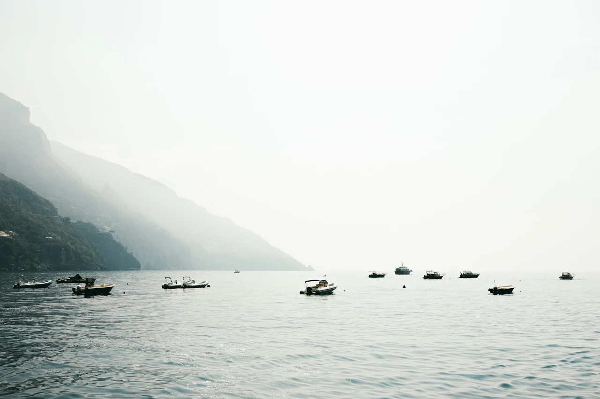

Cardápios sazonais de inspiração mediterrânea valorizam ingredientes frescos, frutos do mar de origem selecionada e o cuidado de uma cozinha que respeita os sabores. No terraço ao ar livre, os almoços se estendem e os jantares ganham a luz das velas.
Spa Aurelia
Salas tranquilas, rituais corporais restauradores e jornadas de relaxamento personalizadas oferecem uma pausa acolhedora entre os dias de descoberta.

Passeio privativo de veleiro
Explore enseadas protegidas e paisagens de mar aberto em um passeio de veleiro sem pressa, com tempo para nadar e saborear um piquenique preparado, quando as condições permitirem.
Cuidado em cada detalhe
Hospitalidade desde o primeiro instante
Da chegada às ocasiões especiais, cuidado em cada detalhe.